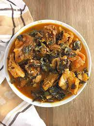

Oha Soup and Pounded Yam
Oha soup is a native igbo soup that originates from Nigeria's eastern region. It's one of those traditional Igbo soups that you'll always relish. Oha soup isn't an everyday kind of soup.
Below is a list of ingrdients used in preparing Oha soup
| SN |
Ingredients |
Measurements |
01 |
Cocoyam or Achi (soup thickeners) |
1 derica |
02 |
Oha leaf |
2 bunches |
03 |
Oha spice |
small |
04 |
Beef |
1Kg |
05 |
Smoked Fish |
1/2 KG |
| 06 |
Periwinkle (Optional) |
1/2 derica |
| 07 |
Ground crayfish |
2 spoons |
| 08 |
Palm Oil |
2 spoons |
| 09 |
onions |
1 |
| 10 |
Uziza leaves (chopped) |
|
11 |
Stock fish |
1/2Kg |
12 |
Seasoning cubes |
4 |
Preparation:
- Put meat, kponmo and stock fish in a pot, add seasoning and onions, let simmer for 5 minutes, then put a little water, cover and let cook till meat is tender.
- You can either add cocoyam while cooking the meat so it can cook together to save time or cook the cocoyam separately.
- When it has cooked properly, add 2 cups of water then add palm oil, allow to cook for about ten minutes. (Remove cocoyam and pound in a mortar or blend using a blender or a food processor)
- Add ground crayfish, ground pepper, salt and let cook for another seven minutes
- Add the blended/ pounded cocoyam paste or achi (before you add achi to your soup, make sure you dissolve it in a little water, if not your soup will cake up). Let the soup cook for about three minutes
- Add your Oziza first (Oziza leaves are stronger than Oha leaves), then add your Oha leaves.
- Let it cook for one minute, then turn off the cooker
- Your delicious Oha soup is ready.
- Serve with your preferred swallow (Eba, Pounded yam, Fufu, wheat, etc)
